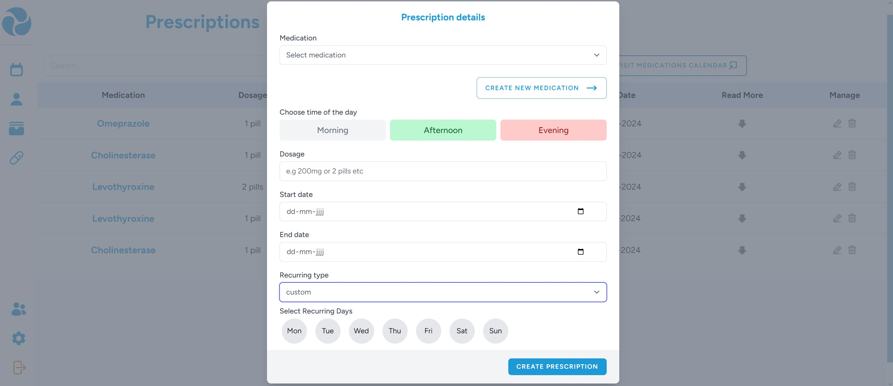
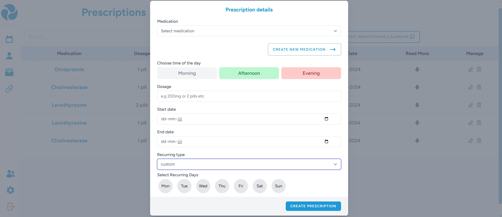

Machine Learning & Causal Inference: A Short Course
Stanford Graduate School of Buisiness
Course Overview
During my internship at Mobilab&Care, I enrolled in the online
course Machine Learning & Causal Inference: A Short Course
offered by Stanford Graduate School of Business. This course introduced
the core concepts of machine learning and how they can be applied to
understand cause-and-effect relationships in data. It provided me with
a strong foundation in both areas, which I was able to apply during my
internship projects.
Topics Covered
This course focused on how machine learning can be used to
understand cause-and-effect relationships in real-world data.
It combined ideas from economics, statistics, and computer science.
Key topics included:
- Applied Machine Learning: Supervised learning techniques with a focus on how economists use them in practice.
- Prediction vs. Estimation: Understanding the difference between using models to predict outcomes and using them to estimate causal effects.
- Average Treatment Effects (ATE): Methods to estimate the effect of a treatment or action on an entire population, including propensity scores and double robustness.
- Conditional Average Treatment Effects (CATE): Using causal trees and causal forests to estimate how treatment effects vary across individuals or groups.
- Robust Estimation: Designing machine learning algorithms that give reliable causal results, even when working with imperfect data.
- Loss Functions for Causal Inference: Best practices for building and evaluating models that estimate treatment effects, with a focus on policy learning and validation.
The course used case studies and examples from economics and public policy to
explain each concept in a clear and practical way.
What I Learned
This was a challenging course for me, as it required a
background in statistics and econometrics. While I was not able
to follow every concept in full detail, I gained a solid
overview of the main ideas in causal inference.
I learned the difference between correlation and causation, and
how confounding can affect the results of a study. I also
understood what Average Treatment Effects (ATE) are and how
Conditional Average Treatment Effects (CATE) can be estimated
using advanced techniques like double robust methods. These
concepts were new to me, but very eye-opening.
My earlier course, Fat Chance: Probability from the Ground
Up, helped me understand the statistical thinking
behind many of the lessons. Thanks to this course, I was
also able to better understand the data analysis and
evaluation work I did during my internship at Mobilab&Care.
 
